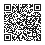
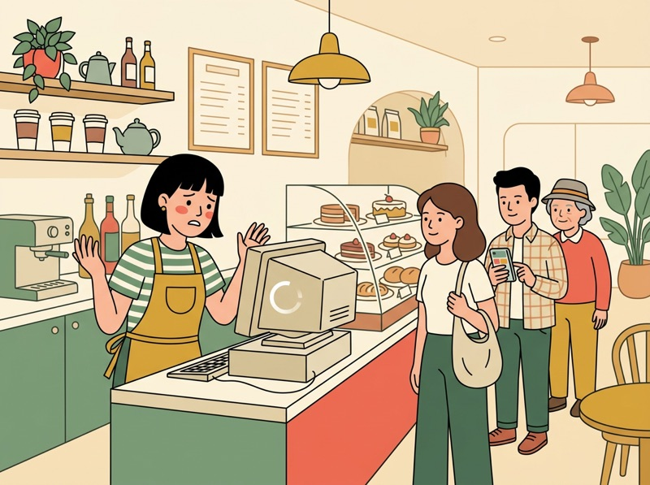
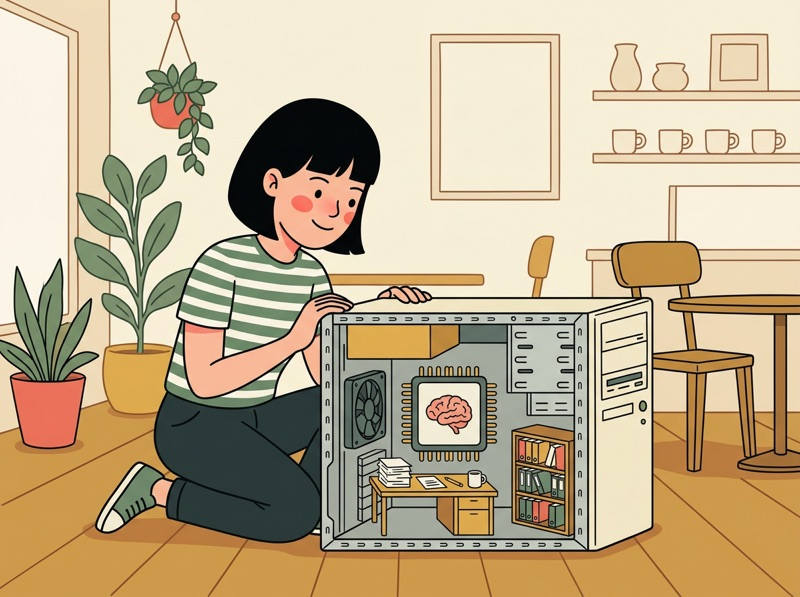
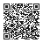
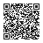

📱 スマホで開く
教室の画面を見ながら、自分のスマートフォンで、このページを開けます。スマートフォンのカメラで、このQRコードを読み取ってください。QRコードを押すと、大きく表示されます。
スマートフォンでも、ブラウザの翻訳が使えます。ゲームも、スマートフォンで遊べます。
🎮 用語シューティング（1人用のゲーム）
画面に出る「意味」に合う用語の的を撃つゲームです。授業の中で2回（ステージ1・ステージ2）遊びます。点数は記録されません。試験の点数とも関係なく、用語を覚えるための練習です。ゲームの画面も、ブラウザの翻訳で意味を母語にできます（用語は日本語のまま表示されます）。音は初めは出ません。
→ ゲームを開くこの回のゴール
- コンピュータの5つの機能（入力・出力・記憶・演算・制御）を言える。CPUが、演算と制御を行う頭脳だと説明できる
- 主記憶（電源を切ると消える・いま使うデータを置く）と補助記憶（保存する・電源を切っても残る）の違いを、例を使って説明できる
- HDDとSSDの違いを言える。記憶装置の速さ・大きさの関係（記憶階層）を図で説明できる
- 変動費と固定費の違いを言え、損益分岐点の簡単な計算ができる
- 損益計算書と貸借対照表の違いを言える。IT機器も会社の資産になることがあると知る
- 過去問（令和7年度）を、問い方の型を使って解く
授業の流れ
2コマ連続（90分 + 90分 = 計180分）。休憩10分は授業時間に含めません。🎮のブロックは、ゲームで遊ぶ時間です。
前回の復習テスト → パソコンが遅くなったストーリー → コンピュータの5つの機能
前回の復習テスト（約10分：テスト約5分＋解説の確認約5分）
前回（第6回）の内容を、1週間たって、どれだけ覚えているかを確かめる5問（約5分）。前回の確認テストで、DNSの正答率が、ほかより低かった。そのため、DNSとIPアドレスを、聞き方を変えて、何問か入れている。点数を競うものではない。覚えていることと、忘れていることを、自分で知るためのテスト。送信すると、点数と、正解・解説が表示される。そのあと、間違えた問題の解説を読む。分からないところは、隣の人か先生に聞く。
今日のストーリー：レジのパソコンが遅い（約10分）
駅前のカフェを開いたAさん（架空の話）は、お店のレジに、古いパソコンを使っている。最近、動きが遅い。中身を開けて、考えてみる。

1. レジのパソコンが、固まるお客さんが並んでいるのに、画面が止まる。パソコンの中では、何が起きているのか。
2. パソコンの中身を開けてみる考える部品（CPU）、いま使うデータを広げる机（主記憶）、データをしまう本棚（補助記憶）がある。- 3. 保存の装置を、見比べる古い保存装置（HDD）と、新しい保存装置（SSD）。違いは何か。
- 4. 新しいパソコンを買うお金は、どう考える？パソコンは、お店の財産（資産）。何杯売れば、元が取れるのか。お店のお金を、数字で見る。
1・2はCPUと主記憶、3は補助記憶（HDD・SSD）、4は企業のお金の管理（ストラテジ系）の話。順番に学ぶ。
ペアで話す（約5分）：自分のスマートフォンやパソコンが「遅い」と感じたのは、どんなとき（たくさんのアプリを開いたとき、写真や動画がたくさん入っているとき、古くなったとき、など）か。そのとき、何をしたか。日本語で話す。
今日の地図（約5分）
パソコンの中身から、お店のお金まで
コンピュータの5つの機能（約10分、教科書 p.244-255）
IPAのシラバスは、コンピュータが5つの基本的な機能から構成されていて、それらが連携していると書いている（用語例：演算、制御、記憶、入力、出力。確認日：2026-11-10）。パソコンやスマートフォンの中で、この5つが、どの部品の役割かを、下の図で見る。
コンピュータの5つの機能と、部品
CPU → 主記憶・キャッシュメモリ → スマートフォンの保存容量を見る → 🎮ゲーム①（テクノロジ系：コンピュータシステム 教科書 p.244-255）
① CPU：コンピュータの頭脳（約15分）
CPU（Central Processing Unit）は、プログラムの命令を読み取って、演算と制御を行う部品。ストーリーの2の「考える部品」が、これ。パソコンやスマートフォンのすべての動きは、CPUの指示と計算が、元になっている。IPAのシラバスは、CPUを、プロセッサの基本的な仕組みの用語例に挙げている。
では、CPUの「速さ」は、どう表すのか。
- クロック周波数：CPUが動く速さの目安の一つ。GHz（ギガヘルツ）などで表す。数が大きいほど、1秒間に動く回数が多い。ただし、CPUの性能は、クロック周波数だけでは決まらない（次のマルチコアの数なども関係する）。
- マルチコアプロセッサ：1つのCPUの中に、処理を行う部分（コア）が、複数あるCPU。複数の仕事を、同時に進めやすい。
- GPU：画像などの処理を、得意とするプロセッサ。ゲームや動画で使われる。
この3つは、シラバスの用語例にある（マルチコアプロセッサ・GPU・クロック周波数）。用語カードに入れるのはクロック周波数だけ。マルチコアプロセッサとGPUは、名前と、おおまかな意味を知っていればよい。
② 主記憶とキャッシュメモリ：いま使うデータを置く場所（約10分）
CPUは、仕事をするとき、使うプログラムやデータを、すぐに読み書きできる場所に置く。これが主記憶（メインメモリ）。机の上に、いま使う資料を広げているイメージ。主記憶には、RAMが使われる。RAMは揮発性メモリで、電源を切ると、内容が消える（シラバスの用語例：RAM、ROM、揮発性メモリ、不揮発性メモリ（フラッシュメモリ））。
- RAM：読み書きできるメモリ。揮発性（電源を切ると消える）。主記憶に使う。
- ROM：基本的に、読み出し専用のメモリ。電源を切っても消えない（不揮発性）。
- フラッシュメモリ：電源を切っても消えない、不揮発性の半導体メモリ。USBメモリやSDカード、SSDで使われる。
もう一つ。CPUは、とても速い。主記憶は、CPUより、速さが追いつかない。そこで、CPUと主記憶の間に、小さくて速いメモリを置く。これがキャッシュメモリ。よく使うデータを、そこに置いておくので、主記憶まで取りに行く回数が減る。
ストーリーに戻る：レジのパソコンが固まる理由は、CPUが古い、主記憶が足りない（机が狭い）、保存装置が遅い、などが考えられる。1つに決められないので、「どの部品が、どの仕事をするか」を、先に知る。
手を動かす：自分のスマートフォンの「保存の容量」を見る（約10分）
- 自分のスマートフォンの、設定アプリを開く。「情報」「端末情報」「ストレージ（保存容量）」などの名前の項目を探す。機種によって、名前や場所が違う。見つからないときは、設定アプリの検索に「ストレージ」と入力する
- 見つけた保存容量（例：128GB）と、今使っている量を、スマートフォンのメモアプリなどに、メモする。これは、補助記憶（データを保存する場所）の大きさ
- 機種によっては、主記憶（RAM）の大きさ（例：6GB）も、表示される。表示される人は、保存容量と比べる（主記憶は、保存容量より、ふつう、ずっと小さい）。表示されない機種もある
- 隣の人と、比べる。「保存容量」と「主記憶」は、どちらが大きいか。なぜ、そうなっていると思うか
🎮 ゲーム①：用語シューティング ステージ1（約10分）
ここまでに出た用語（CPU・クロック周波数・主記憶・キャッシュメモリと、前回のDNS・IPアドレス・ドメイン名）を、ゲームで確かめる。画面の「意味」を読んで、合う用語の的を撃つ。点数は記録されない。最初は音が出ない。間違えた用語は、最後の画面に一覧が出る。
進め方：1回は約2分。目標は「ランクA以上」（7問中6問以上）。終わったら、間違えた用語の一覧を、下の用語カードで確かめて、もう一度遊ぶ。ページを開くと、「スタート」ボタンが出る。翻訳を使う人は、翻訳してから押す。
→ ステージ1を始める
📱 スマホで遊ぶ
スマートフォンのカメラで、このQRコードを読み取ると、ステージ1が開く。押すと、大きく表示される。
ペアで確かめる（約5分）：「CPU」「主記憶」「キャッシュメモリ」を、カフェのAさんに、やさしい日本語で説明する。たとえ（頭脳・机・机の上の手元のメモ、など）を使ってよい。1人が説明して、もう1人が、分かりにくいところを聞く。説明できたら、反対にする。
補助記憶（HDD・SSD）と記憶階層 → 企業のお金の管理 → 🎮ゲーム②（テクノロジ系 p.244-255、ストラテジ系 p.033-040）
① 補助記憶と、記録媒体の種類（約10分）
主記憶は、電源を切ると消える。だから、残したいデータは、別の場所に保存する。これが補助記憶（保存する装置・記録媒体）。ストーリーの3の本棚。主記憶より、読み書きは遅いが、容量が大きく、電源を切っても残る。
| 種類 | 記録のしかた | 特徴（一般に） |
|---|---|---|
| HDD | 磁気ディスクを回転させて、記録する | 動く部品がある。SSDより、遅く、衝撃に弱い |
| SSD | 半導体メモリ（フラッシュメモリ）に記録する | 動く部品がない。HDDより、読み書きが速い |
| USBメモリ・SDカード | 半導体メモリ（フラッシュメモリ）に記録する | 小さくて、持ち運びやすい。データの受け渡しに使う |
| CD・DVD・ブルーレイディスク | 光ディスク。光で読み書きする | 持ち運べる。CD-ROM・DVD-ROMは読み出し専用、CD-R・DVD-Rは1回だけ書き込める |
表の特徴は、一般的な比べ方。機種や値段によって、例外がある。シラバスの用語例には、上の名前がすべて入っている。DVD-RAMは、光ディスク。過去問（問75）で、半導体メモリではないものとして出る。
② 記憶階層：速さと大きさの関係（約7分）
ここまでの装置を、CPUに近い順に並べると、「速くて小さい」から「遅くて大きい」へ、つながる。これを記憶階層の考え方という（シラバスの用語例：キャッシュメモリ、主記憶、補助記憶）。
記憶階層：CPUに近いほど、速くて、小さい
ストーリーに戻る：Aさんは、レジのパソコンの保存装置がHDDなら、SSDに替えることで、起動やデータの読み込みが速くなることがある、と知った。でも、いくらかかるのか。そして、その費用は、元が取れるのか。次は、お店のお金の話。
③ 企業のお金の管理：売上・利益・損益分岐点（約15分、教科書 ストラテジ系 p.033-040）
お店は、売上（お客さんからもらうお金）から、費用を引いた残りが、利益になる。IPAのシラバスは、会計・財務の用語例に、利益、粗利益、営業利益、損益分岐点、原価、変動費、固定費、販売量などを挙げ、損益分岐点や利益率の簡単な計算を、活用例にしている。
費用は、2種類に分けて考える。
費用の2種類：変動費と固定費
変動費
売る量（作る量）に応じて、増える費用。
固定費
売る量に関係なく、かかる費用。
例：Aさんのカフェで、損益分岐点を計算する（説明用の数字）
- コーヒー1杯の価格：500円
- 1杯あたりの変動費（豆・カップなど）：150円
- 1か月の固定費（家賃など）：210,000円
- 1杯売るごとに、増える利益：500円－150円＝350円
- 固定費210,000円を、取り戻すのに必要な杯数：210,000円÷350円＝600杯
- 600杯で、利益がちょうど0になる。これが損益分岐点。600杯より少ないと赤字、多いと黒字。たとえば700杯なら、350円×700杯－210,000円＝35,000円の利益
損益分岐点の図（カフェの例）
この例の固定費は、家賃などの金額。レジのパソコン代を入れた計算は、課題（自分のお店で計算する）と、ペアで話す内容で考える。
今日、覚える式：損益分岐点の販売量 ＝ 固定費 ÷（1個あたりの価格 － 1個あたりの変動費）。式の丸暗記より、「1杯売ると、いくら残るか（350円）」を考える。
利益の種類（シラバスの用語例）：売上から、原価（商品を作る・仕入れるのにかかった費用）を引いたものが粗利益。そこから、家賃・給料などの費用を引いたものが、営業利益。
④ 会社の成績表：財務諸表と、資産としてのIT機器（約5分）
会社は、お金の状況を、決まった形の書類（財務諸表）にまとめて、報告する。シラバスには、損益計算書、貸借対照表、キャッシュフロー計算書が出てくる。今日は、最初の2つを、違いで覚える。
損益計算書と貸借対照表
損益計算書
一定の期間（例：1年間）の、収益と費用から、利益を示す。
貸借対照表
ある時点の、資産・負債・純資産の状況を示す。
Aさんが買う新しいパソコンは、お店の資産（会社が持っている、価値のあるもの）になることがある（貸借対照表の「資産」の側。金額や使う期間などの決まりで、扱いが変わる。今日は、「IT機器も、会社の資産になることがある」と知っていればよい）。IT機器は、ただの道具でなく、お金の面でも、会社の大事な持ち物。
ペアで話す（約3分）：Aさんが、新しいパソコン（150,000円とする）を買った。このお金は、変動費と固定費のどちらの考え方に近いか。そう考えた理由を、日本語で話す。
🎮 ゲーム②：用語シューティング ステージ2（約10分）
今日の用語（補助記憶・HDD・SSD・変動費・固定費・損益分岐点・損益計算書・貸借対照表）と、1限のCPU・キャッシュメモリが混ざる。的が降りてくる速さも上がる。ライフは3つ。最後の画面に、間違えた用語の一覧が出る。ここでも、点数は記録されない。
進め方：1回は約2分。目標は「ランクA以上」（10問中8問以上）。何度でも挑戦してよい。終わったら、間違えた用語の一覧を用語カードで確かめる。「スタート」ボタンを押すまで、時間は進まない。
→ ステージ2を始める
📱 スマホで遊ぶ
スマートフォンのカメラで、このQRコードを読み取ると、ステージ2が開く。押すと、大きく表示される。
過去問演習 → 用語を説明し合う → 確認テスト（1回目）
過去問演習（約15分）：今日の範囲の令和7年度の公開問題を、問い方の型を使って解く。3問ある。自分で選んでから、答えと解説を見る。
【例題①】問75 次の記憶媒体のうち，記憶素子として半導体メモリを用いているものだけを全て挙げたものはどれか。
a CD-ROM
b DVD-RAM
c RAM
d SSD
e USBメモリ
出典：令和7年度 ITパスポート試験 公開問題 問75（テクノロジ系。問題文・選択肢は原文のまま）
自分で選んだあとに、答えと解説を見る
正解：ウ（型：5つの選択肢を1つずつ判定して、全部に当たる組合せを選ぶ）。RAM（主記憶に使うメモリ）、SSD、USBメモリは、半導体メモリ。CD-ROMとDVD-RAMは、光ディスクで、半導体メモリではない。まず、確実に半導体メモリだと分かるもの（RAM）にしるしをつけ、選択肢の組合せから、aとbを含むものを外す、という進め方ができる。今日の用語のSSDは、「半導体メモリ」とセットで覚える。
【例題②】問34 ある商品を5,000個販売したところ，売上げが6,000万円，利益が400万円となった。商品1個当たりの変動費が7,000円であるとき，利益を1,000万円以上にするためには，少なくともあと何個販売すればよいか。
出典：令和7年度 ITパスポート試験 公開問題 問34（ストラテジ系。問題文・選択肢は原文のまま）
自分で選んだあとに、答えと解説を見る
正解：イ（型：1個あたりの「増える利益」を求めて、足りない利益を割る）。①1個の売値：6,000万円÷5,000個＝12,000円。②1個売るごとに増える利益：12,000円－変動費7,000円＝5,000円。③足りない利益：1,000万円－400万円＝600万円。④必要な個数：600万円÷5,000円＝1,200個。固定費は、販売個数が増えても変わらないので、この計算には出てこない。損益分岐点の考え方と同じ。
【例題③】問5 A社ではB商品の仕入れと販売を行っている。ある期のB商品の仕入単価は期首から上昇し続け，期末が最も高くなった。当該期の売上原価を“期首棚卸高＋当期商品仕入高－期末棚卸高”で計算するとき，期末棚卸高の計算に期末の仕入単価を用いると，B商品の期末棚卸高及び売上原価は，期中の仕入単価の平均値を用いる場合に比べてどのようになるか。
出典：令和7年度 ITパスポート試験 公開問題 問5（ストラテジ系。問題文・選択肢は原文のまま）
自分で選んだあとに、答えと解説を見る
正解：ウ（型：問題文に書いてある式に、変化をあてはめる）。期末の仕入単価は、平均の単価より高い。だから、期末の単価で期末棚卸高（期末に残っている商品の金額）を計算すると、金額は上がる。式「売上原価＝期首棚卸高＋当期商品仕入高－期末棚卸高」で、引く数（期末棚卸高）が大きくなるので、売上原価は下がる。この問題は、用語の意味を知らなくても、式の中の「－」に注目すれば解ける。今日の範囲の利益と原価の関係（売上－費用＝利益。原価だけを引くと粗利益）につながる。
用語を、ペアで説明し合う（約10分）：下の「用語カード」の12語から、3つずつ選び、1人が、やさしい日本語で意味を説明する。もう1人は、どの用語かを当てる。
確認テスト（1回目）（約5分）
今日の内容の5問。点数を競うものではない。今、どこまで分かっているかを、自分で知るためのテスト。分からない問題は、思い出せる範囲で答える。送信すると、点数と、正解・解説が表示される。
振り返り → 用語カードの提出・次回予告
- 振り返り（約3分）：1回目の結果の画面で、点数を覚えて、間違えた問題の解説を読む。分からないところは、隣の人に聞く、または、このページの用語カード・練習クイズ・ゲームで確かめる
- 確認テスト（2回目）は任意：時間がある人、確かめたい人は、下の「任意の取り組み」から受ける
- 用語カード：今回覚えた用語にチェックを入れて、フォームで提出する（約3分）
- 質問と、次回までの課題の確認（約1分）。読むだけの「就活ワンポイント」もある。自分の点数の推移は、「任意の取り組み」の「自分の成績を見る」から、いつでも見られる
- 次回（第8回）：止まらないシステムを作る——稼働率・RASISと、システム構成（テクノロジ系 p.256-269、ストラテジ系のシステム戦略）
用語カード（今日の用語）
用語カードは、今日の授業で出る用語と、その意味のリスト。授業の最後に、フォームで今回覚えた用語にチェックを入れて提出する。用語は日本語のまま覚える。試験は日本語で行われる。
| 用語 | 意味 |
|---|---|
| CPU | コンピュータの頭脳。プログラムの命令を読み取って、演算（計算）と制御（全体の指示）を行う部品 |
| クロック周波数 | CPUが動く速さの目安の一つ。単位は GHz（ギガヘルツ）など。数が大きいほど、1秒間に動く回数が多い。性能は、これだけでは決まらない |
| 主記憶 | CPUがいま使うプログラムやデータを置く場所（メインメモリ）。RAMが使われ、電源を切ると内容が消える |
| キャッシュメモリ | CPUと主記憶の間にあって、よく使うデータを置いておく、小さくて速いメモリ |
| 補助記憶 | データやプログラムを、長く保存する装置。主記憶より遅いが、容量が大きく、電源を切っても残る（例：HDD、SSD） |
| HDD | 磁気ディスクを回転させて、データを記録する補助記憶装置。動く部品があるので、一般に、SSDより読み書きが遅く、衝撃に弱い |
| SSD | 半導体メモリ（フラッシュメモリ）にデータを記録する補助記憶装置。動く部品がなく、一般に、HDDより読み書きが速い |
| 変動費 | 販売量（作る量）に応じて増える費用（例：コーヒーの豆・カップ） |
| 固定費 | 販売量に関係なく、かかる費用（例：家賃） |
| 損益分岐点 | 利益がちょうど0になる、売上（販売量）。これを超えると黒字になる |
| 損益計算書 | 一定期間の、収益と費用から、利益を示す財務諸表 |
| 貸借対照表 | ある時点の、資産・負債・純資産の状況を示す財務諸表 |
練習クイズ（サイト内・記録なし）
確認テストの内容を、自分のペースで練習するためのクイズ（確認テストと同じ内容）。回答はこのページの中で判定されるだけで、どこにも送信・保存されず、成績にも含まれない。何度でも試せる。
Q1コンピュータの中で，プログラムの命令を読み取り，演算と制御を行う装置はどれか。
CPUは、プログラムの命令を読み取って、演算と制御を行う、コンピュータの頭脳（IPAシラバスの用語例：演算，制御，CPU）。アは、CPUがいま使うデータを置く場所。ウは、データを保存する装置。エは、CPUと主記憶の間で、よく使うデータを置く小さくて速いメモリ。
Q2電源を切ると記憶した内容が消える，CPUがいま使うプログラムやデータを置くメモリはどれか。
主記憶は、CPUがいま使うプログラムやデータを置く場所で、RAMが使われる。RAMは揮発性メモリで、電源を切ると内容が消える（IPAシラバスの用語例：RAM，揮発性メモリ）。イ・ウ・エは、電源を切っても内容が残る、データを保存する装置。
Q3半導体メモリ（フラッシュメモリ）を使い，動く部品がなく，一般にHDDより読み書きが速い補助記憶装置はどれか。
SSDは、半導体メモリを使う補助記憶装置。令和7年度の公開問題 問75でも、SSDは半導体メモリを用いるものとして扱われている。HDDは、磁気ディスクを回転させて記録する。DVD-ROMとCD-Rは、光ディスク。
Q4カフェで，コーヒー1杯の価格が600円，1杯あたりの変動費が200円，1か月の固定費が200,000円のとき，1か月の損益分岐点の販売量（利益がちょうど0になる杯数）は何杯か。
1杯売るごとに増える利益は、600円－200円＝400円。固定費200,000円を取り戻すには、200,000円÷400円＝500杯。500杯で、利益がちょうど0になる（損益分岐点）。イは、固定費を価格600円で割った数。エは、固定費を変動費200円で割った数。どちらも、1杯あたりの増える利益（400円）を使っていない。
Q5ある時点での，企業の資産・負債・純資産の状況を示す財務諸表はどれか。
貸借対照表は、ある時点の、資産・負債・純資産の状況を示す財務諸表。損益計算書は、一定期間の収益と費用から、利益を示す。キャッシュフロー計算書は、お金の出入りを示す。勘定科目は、取引を分類する項目の名前で、財務諸表そのものではない。
任意の取り組み
必須ではありません。時間があるとき、確かめたいときに使います。
用語シューティング（ゲーム）
授業で遊んだゲームを、何度でも遊べます。間違えた用語の一覧を見て、用語カードで確かめると、覚えやすくなります。
確認テスト（2回目）
1回目と同じ5問です（問題の順番は違います）。受けたら、結果の画面の点数を、1回目の点数と自分で比べます。1回目の点数を、覚えておきます。
自分の成績を見る
診断テスト・復習テスト・確認テストの点数の推移と、次に復習するとよい用語を見られます。学校のGoogleアカウントでログインすると、自分の分だけが表示されます。
就活ワンポイント（任意）
授業時間には含めない、読むだけのコラム。成績にも含まれない。今日の言葉を、面接で使う練習。
面接で「パソコンを選ぶとき、何を見ればいいですか」と聞かれたら
お店の仕事や、アルバイトで、お客さんに聞かれることがある。専門用語を使わずに、短く説明する練習になる。答えは、3つの順番で話すと、分かりやすくなる（一つの考え方）。下の吹き出しが、順に現れる。
- 例文は一例。自分が実際に学んだこと、したことを話す。していないことは、言わない。
- 用語を、日本語のまま使えて、しかも「頭」「机」「本棚」のような例えで言い換えられると、ITに詳しくない人にも伝わる。
- 「自分のスマートフォンの保存容量を調べた」のように、自分がしたことを一言入れると、話に説得力が出る。
答え方の順番（結論・理由・まとめ）は、この教材の一つの考え方で、公式のルールではない。IPAは、ITパスポート試験の合格について、「就職活動において、自らの知識を証明し、自己アピールに役立ちます」と紹介している（IPA「合格のメリット」、確認日：2026-11-10。留学生向けに書かれた説明ではない）。
課題・次回までにやること
教科書 p.256-269 を読み、稼働率が何を表すか、確認しておく（第8回は「止まらないシステムを作る」）。第8回の授業の最後に、覚えた用語をフォームで提出する。
練習クイズは、全問正解になるまで繰り返す。ゲームは、最後の画面の「間違えた用語」の一覧を見て、用語カードで確かめる。
今日の範囲（テクノロジ系 p.244-255、ストラテジ系 p.033-040）の章末確認問題を、自分のペースで解く。授業では、同じ範囲を確認テストで確かめる。
好きな商品を1つ選び（例：ラーメン、スマートフォンのケース）、価格・1個あたりの変動費・1か月の固定費を、自分で決める（架空の数字でよい）。授業の式で、何個売ると損益分岐点になるか、計算する。